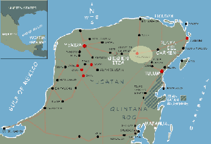

Valladolid |
 |
23-Sept-00: Hotel El Mesón del Marques My general impression of Valladolid is how sensible many things are here, and how shameful the impersonal sprawl and advertisement-cluttered scenery of US towns are. The streets are narrow, one-way from necessity. Every building seems to boast the same kind of wood-framed doorway ten or so feet high, leading into a shop, a living room or a courtyard. On any street there are stores, residences, restaurants and repair shops mingled in no special pattern. The great number of repair shops interested me: in a region where few people can afford new cars or bicycles or televisions, they repair them. Another charming aspect of the town: fewer signs. As pedestrians, shoppers are enticed by lower-wattage methods, such as the display of merchandise. Colors: so many pastels. The palette of sun-faded materials; of foods with sugar, white flour and articial colors; of unstable dyes in fabric and paper; and of what one sees with heat-blurred vision, when one is swathed with sweat, and one's mind has no reason to collect its impressions in anything as solid as an opaque color. Smells: mildew in air-conditioned places; corn tortillas; burnt-rubber-type odor of exhaust. Tastes: so far, sadly unmemorable but for the surprising refreshment Mexican beer offers in its place of origin. I've been grateful for the food I've received but am so far in no danger of overeating. |